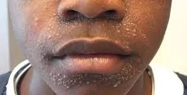
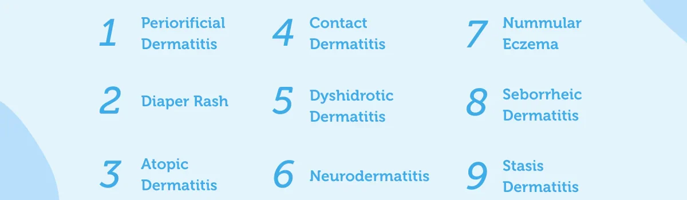
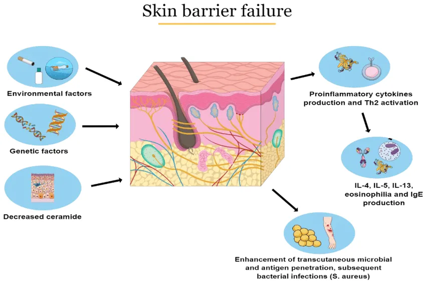
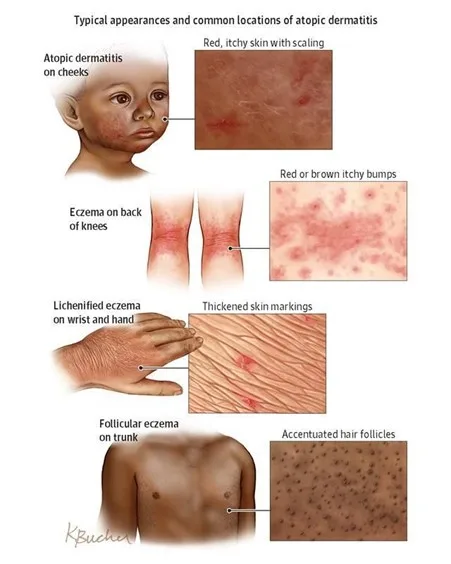
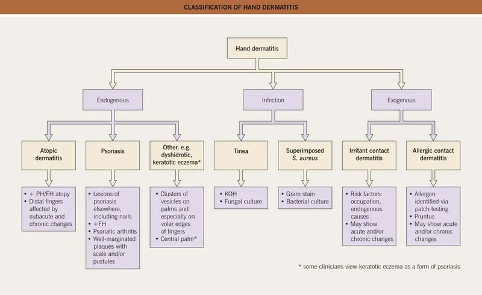
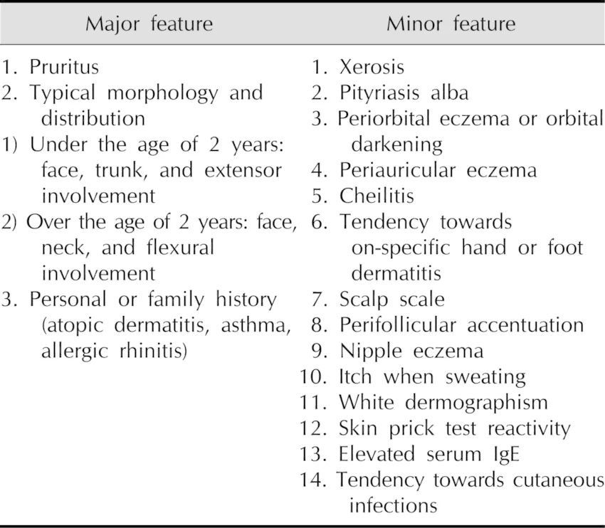
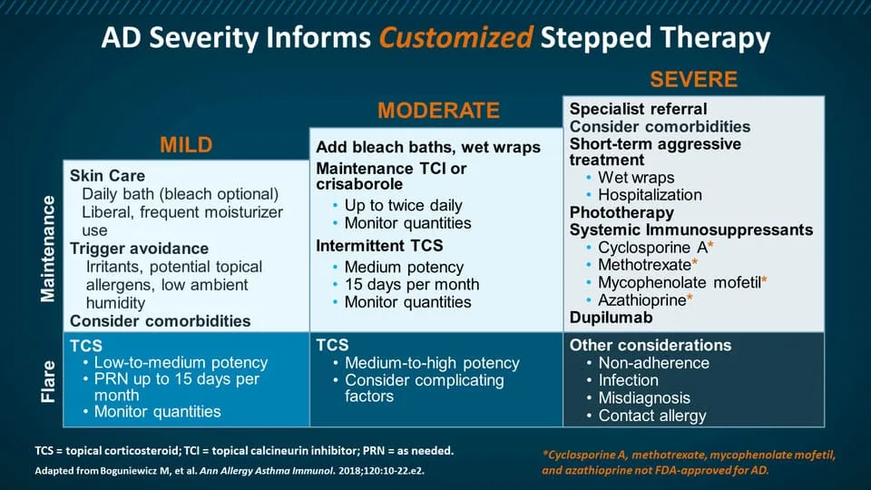
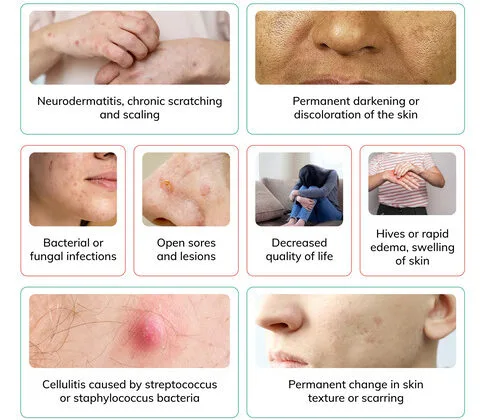

Expanded Nursing Uganda Explanation
Dermatitis should be understood beyond a short definition. Link the concept to patient history, focused assessment, common risks, nursing priorities, documentation and evaluation of outcomes.
01 Overview
"Dermatitis" is a broad, umbrella term derived from Greek, where "derma" means skin and "-itis" signifies inflammation. Therefore, dermatitis fundamentally refers to inflammation of the skin.
It is characterized by a reaction pattern of the skin to various internal or external factors, leading to a range of symptoms. While the specific presentation can vary significantly depending on the type and chronicity, common features of dermatitis include:
- Pruritus (Itching): Often the most prominent and distressing symptom.
- Erythema (Redness): Due to increased blood flow to the inflamed area.
- Edema (Swelling): Accumulation of fluid in the tissue.
- Papules and Vesicles: Small, raised bumps and fluid-filled blisters, especially in acute phases.
- Scaling: Flaking of the skin, often in chronic phases.
- Crusting: Dried exudate from ruptured vesicles or erosions.
- Lichenification: Thickening and accentuation of skin lines, occurring with chronic scratching.
- Dryness/Xerosis: Often a prominent feature, particularly in atopic dermatitis.
It's important to note that while "dermatitis" and "eczema" are often used interchangeably, "eczema" specifically refers to a type of dermatitis characterized by inflamed, itchy, and often oozing or scaly skin. Historically, eczema implied an endogenous (internal cause) inflammation, while dermatitis encompassed both endogenous and exogenous (external cause) inflammation. However, in modern clinical practice, atopic dermatitis is the most common form of eczema, and the terms are often synonymous for this condition. For simplicity in this module, we will primarily use "dermatitis" as the overarching term, and specify "atopic dermatitis" when referring to that particular type of eczema.
While many forms of dermatitis exist, we will focus on the most common and clinically significant types:
A chronic, relapsing, inflammatory skin condition characterized by intense pruritus, erythema, scaling, and often lichenification.
- Key Features: Endogenous: Primarily driven by internal factors (genetics, immune dysfunction, skin barrier defects).
- "The Itch that Rashes": Itching often precedes the visible rash.
- Distribution: Varies with age (e.g., extensor surfaces in infants, flexural creases in children/adults).
- Associated Conditions: Often part of the "atopic triad" (asthma, allergic rhinitis, atopic dermatitis).
- Skin Barrier Dysfunction: A hallmark feature, leading to increased water loss and susceptibility to irritants/allergens.
An inflammatory skin reaction caused by direct contact with an external substance. It is always an exogenous dermatitis.
- Key Features: Distribution: Typically localized to the area of contact with the offending substance.
- Two Main Types: Irritant Contact Dermatitis (ICD): Mechanism: Non-allergic skin reaction to a direct chemical or physical injury from an irritant (e.g., strong acids, alkalis, solvents, detergents, prolonged water exposure).
- Prevalence: Accounts for 80% of contact dermatitis cases.
- Onset: Can occur on first exposure, depending on the irritant's potency.
- Allergic Contact Dermatitis (ACD): Mechanism: A delayed-type hypersensitivity (Type IV) reaction to an allergen in a sensitized individual (e.g., poison ivy, nickel, fragrances, preservatives).
- Prevalence: Accounts for 20% of contact dermatitis cases.
- Onset: Requires prior sensitization; reaction develops 24-72 hours after re-exposure.
- Phototoxic contact dermatitis: It is further divided into two categories, phototoxic and photoallergic contact dermatitis. Phototoxic contact dermatitis is a sunburn-like skin disorder resulting from direct tissue damage following the ultraviolet light-induced activation of a phototoxic agent. It is usually associated only with areas of skin which are left uncovered by clothing especially during scans and x-rays.
A chronic inflammatory skin condition affecting areas rich in sebaceous glands (where oil is produced).
- Key Features: Distribution: Scalp (dandruff in adults, cradle cap in infants), face (eyebrows, nasolabial folds, ears), chest, intertriginous areas.
- Appearance: Greasy, yellowish scales on an erythematous base. Itching can be present but is usually less severe than in atopic dermatitis.
- Association: Linked to the yeast Malassezia (formerly Pityrosporum ovale ) and often exacerbated by stress, fatigue, or neurological conditions (e.g., Parkinson's disease).
An inflammatory skin condition that develops on the lower legs due to chronic venous insufficiency.
- Key Features: Distribution: Typically involves the ankles and lower calves.
- Appearance: Erythema, scaling, pruritus, edema, and often hyperpigmentation (hemosiderin staining from extravasated red blood cells, giving a "brawny" or reddish-brown appearance).
- Underlying Cause: Impaired venous return leads to increased pressure in capillaries, fluid leakage, and inflammation.
- Progression: Can progress to ulceration if untreated.
- Feature Atopic Dermatitis Contact Dermatitis (Irritant/Allergic) Seborrheic Dermatitis Stasis Dermatitis
- Primary Cause Genetic, immune, skin barrier defect Direct contact with irritant/allergen Malassezia yeast, sebaceous activity Venous insufficiency, impaired circulation
- Nature Chronic, relapsing, endogenous Acute/Chronic, exogenous (external) Chronic, relapsing Chronic, due to vascular compromise
- Main Symptom Intense pruritus ("itch that rashes") Pruritus, burning, pain Greasy scaling, mild itch Pruritus, edema, heaviness in legs
- Appearance Erythema, papules, vesicles, scaling, lichenification, dry skin Erythema, edema, vesicles/bullae, oozing, crusting, sharp borders Erythema, greasy yellow scales, sometimes oily skin Erythema, edema, scaling, hyperpigmentation, varicosities
- Typical Location Flexural folds (children/adults), face (infants), neck Area of contact with offending substance Scalp, face (T-zone), chest, intertriginous areas Lower legs, ankles
- Associated Factors Asthma, allergic rhinitis Exposure history, occupation Stress, neurological conditions, immunosuppression Varicose veins, DVT, heart failure, obesity
- Dermatitis herpetiformis. Appears as a result of a gastrointestinal condition, known as celiac disease.
- Seborrheic dermatitis. More common in infants and in individuals between 30 and 70 years old. It appears to affect primarily men and it occurs in 85% of people suffering from AIDS.
- Nummular dermatitis. Also known as discoid dermatitis , it is characterized by round or oval-shaped itchy lesions. (The name comes from the Latin word "nummus," which means "coin.")
- Perioral dermatitis. Inflammation of the skin around the mouth.
- Infective dermatitis. Dermatitis secondary to a skin infection.
Atopic Dermatitis (AD) is a complex, multifactorial disease involving a vicious cycle of skin barrier dysfunction, immune dysregulation, and environmental factors.
- Skin Barrier Dysfunction (The "Outside-In" Theory): Filaggrin Deficiency: A primary defect in many AD patients is a genetic mutation in the FLG gene, which codes for filaggrin. Filaggrin is a protein essential for forming the stratum corneum (outermost layer of the skin) and breaking down into Natural Moisturizing Factors (NMFs).
- Consequence: A deficient or dysfunctional skin barrier (epidermal tight junctions are also affected) leads to: Increased Transepidermal Water Loss (TEWL): Skin becomes dry (xerosis), making it more susceptible to external factors.
- Enhanced Penetration: Allows irritants, allergens, and microbes (e.g., Staphylococcus aureus ) to easily penetrate the skin barrier.
- Immune Dysregulation (The "Inside-Out" Theory): Type 2 Immune Response: AD is predominantly driven by a Type 2 inflammatory response, characterized by the activation of T-helper 2 (Th2) cells.
- Key Cytokines: Th2 cells produce cytokines like Interleukin-4 (IL-4), IL-13, and IL-31. IL-4 and IL-13: Promote IgE production by B cells (leading to allergic sensitization), contribute to skin barrier disruption, and stimulate pruritus.
- IL-31: Directly stimulates sensory nerves, causing intense itching.
- Dendritic Cells & Mast Cells: Antigen-presenting cells (dendritic cells/Langerhans cells) in the skin take up allergens that penetrate the compromised barrier and present them to T cells, perpetuating the immune response. Mast cells, when activated, release histamine and other inflammatory mediators, further contributing to itch and inflammation.
- Neural Dysregulation: Sensory nerves in the skin become more sensitive and grow into the epidermis, making the skin more prone to itching.
- Microbiome Alterations (Dysbiosis): Staphylococcus aureus: The skin of AD patients is frequently colonized with Staphylococcus aureus . These bacteria produce toxins (superantigens) that further activate the immune system, worsen inflammation, and exacerbate skin barrier damage.
- Reduced Diversity: A decrease in the diversity of beneficial skin microbes may also play a role.
- The "Itch-Scratch Cycle": Intense pruritus leads to scratching, which physically damages the skin barrier.
- This damage allows more allergens/irritants/microbes to enter, amplifying the immune response and inflammation.
- Inflammation further stimulates nerve endings, leading to more itching, thus perpetuating the cycle.
Contact dermatitis arises from a direct reaction of the skin to an external substance.
- Non-Immunological Reaction: ICD is a direct toxic damage to keratinocytes (skin cells) and the skin barrier, not involving an allergic immune response.
- Mechanism of Injury: Direct Cytotoxicity: Irritants (e.g., strong acids, alkalis, detergents, solvents, excessive water) directly damage cell membranes and proteins in the epidermis.
- Lipid Extraction: Solvents can dissolve the protective lipid layer of the stratum corneum, increasing permeability and water loss.
- Inflammatory Cascade: Damaged keratinocytes release pro-inflammatory cytokines (e.g., IL-1, TNF-alpha) and chemokines. These recruit inflammatory cells (neutrophils, monocytes, T cells) to the site, leading to erythema, edema, and pain.
- Individual Susceptibility: Factors like genetic predisposition (e.g., pre-existing dry skin, atopic diathesis), skin site (thinner skin areas are more vulnerable), occlusive environments, and concentration/duration of irritant exposure influence the severity of the reaction.
- Triggers: Contact dermatitis is caused by exposure to a substance that irritates your skin or triggers an allergic reaction, such irritants include; Soaps. Most kinds of soaps, detergents, shampoos and other cleaning agents have harmful substances that could possibly irritate the skin.
- Solvents. Solvents such as turpentine, kerosene, fuel, and thinners are strong substances that are harmful to the sensitive skin.
- Extremes of temperature. There are people who are highly sensitive even when exposed to extremes of temperature and could cause contact dermatitis.
- Products that cause a reaction when you’re in the sun (photoallergic contact dermatitis), such as some sunscreens and cosmetics
- Formaldehyde, which is in preservatives, cosmetics and other products
- Personal care products, such as body washes, deodorants, hair dyes and cosmetics
- Plants such as poison ivy and poison oak, cashew nuts, which contain a highly allergenic substance called urushiol
- Airborne allergens, such as pollen and spray insecticides
- Nickel, which is used in jewelry, and many other items
- Medications, such as antibiotic creams, and there side effects such as diazepam, ceftriaxone.
- Latex and long exposure to wet surfaces such as staying in a wet diaper for a long time.
- Delayed-Type Hypersensitivity (Type IV) Reaction: ACD is a T-cell mediated immune response that requires prior sensitization to an allergen.
- Sensitization Phase (Initial Exposure - Asymptomatic): Hapten Penetration: Small molecular weight chemicals (haptens) that are too small to be antigenic on their own penetrate the skin barrier.
- Protein Binding: Haptens bind covalently to larger skin proteins (often keratinocytes or extracellular matrix proteins), forming a complete antigen (hapten-protein complex).
- Antigen Presentation: Langerhans cells (dendritic cells in the epidermis) capture these hapten-protein complexes, process them, and migrate to regional lymph nodes.
- T-cell Priming: In the lymph nodes, the Langerhans cells present the antigen to naive T-helper cells. These T cells proliferate and differentiate into allergen-specific memory T cells. This phase takes 7-14 days.
- Elicitation/Challenge Phase (Re-exposure - Symptomatic): Re-penetration: Upon subsequent re-exposure to the same allergen, it again penetrates the skin.
- Memory T-cell Activation: The memory T cells, having "seen" the allergen before, are rapidly activated.
- Cytokine Release: Activated T cells release a cascade of pro-inflammatory cytokines (e.g., IFN-gamma, TNF-alpha, IL-17) and chemokines.
- Inflammatory Cell Recruitment: These mediators attract and activate other inflammatory cells (macrophages, keratinocytes, and more T cells) to the site of allergen contact.
- Tissue Damage: The recruited inflammatory cells and cytokines cause direct damage to keratinocytes and the surrounding tissue, leading to the characteristic clinical manifestations (erythema, edema, vesicles, itching) typically appearing 24-72 hours after re-exposure.
The exact pathophysiology of Seborrheic Dermatitis is not fully understood, but it is believed to involve a combination of factors related to sebaceous gland activity, the skin microbiome, and the host's immune response.
- Role of Malassezia Species: Commensal Yeast: Malassezia is a genus of lipophilic (fat-loving) yeasts that are normal inhabitants of human skin, particularly in sebaceous gland-rich areas.
- Immune Response: In SD, there is an abnormal immune response to these yeasts, or an overgrowth of Malassezia , or both. The yeasts break down triglycerides in sebum, releasing unsaturated fatty acids that can be irritating and trigger inflammation.
- Host Susceptibility: Not all individuals with Malassezia develop SD, suggesting host factors (e.g., immune system alterations) play a crucial role.
- Sebaceous Gland Activity: Increased Sebum Production: SD occurs in areas with a high density of sebaceous glands (scalp, face, chest). While increased sebum production is often observed, it's not simply an excess of oil; rather, it's the composition of the sebum and its interaction with Malassezia that is important.
- Immune Response: Inflammation: The inflammatory response in SD involves keratinocytes, which react to Malassezia metabolites by releasing pro-inflammatory cytokines. This leads to the characteristic erythema and scaling.
- Genetic and Environmental Factors: Genetic predisposition, hormonal changes, stress, fatigue, neurological conditions (e.g., Parkinson's disease), and immunosuppression (e.g., HIV/AIDS) can all exacerbate SD, suggesting a complex interplay with the immune system.
Stasis Dermatitis is a consequence of chronic venous insufficiency (CVI), where impaired venous return leads to a cascade of events in the lower extremities.
- Chronic Venous Insufficiency (CVI): Venous Hypertension: Damaged or incompetent venous valves in the leg veins (often following deep vein thrombosis, trauma, or due to genetic predisposition) prevent efficient blood return to the heart. This leads to increased hydrostatic pressure in the veins of the lower legs.
- Capillary Leakage: The sustained high pressure forces fluid, red blood cells, and macromolecules (like fibrinogen) out of the capillaries and into the interstitial space of the dermis.
- Inflammation and Tissue Damage: Edema: Leakage of fluid causes chronic swelling (edema) in the lower legs.
- Hemosiderin Deposition: Red blood cells extravasate into the tissue. As they break down, they release iron-containing hemosiderin, which is phagocytosed by macrophages and deposited in the dermis, leading to the characteristic reddish-brown (brawny) hyperpigmentation.
- Fibrin Cuffing: Fibrinogen that leaks into the interstitial space is converted to fibrin, forming "fibrin cuffs" around capillaries. This theoretically impairs oxygen and nutrient delivery to the skin, contributing to tissue hypoxia and damage.
- Inflammatory Cell Infiltration: The chronic inflammation recruits macrophages, lymphocytes, and other inflammatory cells, further damaging the skin.
- Lipodermatosclerosis: In chronic, severe cases, inflammation and fibrosis of the subcutaneous fat can occur, leading to hardening of the skin and a "woody" appearance (often described as an "inverted champagne bottle" appearance).
- Skin Barrier Impairment and Pruritus: The chronic inflammation, edema, and poor tissue nutrition impair the skin barrier, leading to dryness, scaling, and intense pruritus.
- Scratching further damages the skin, increasing the risk of secondary infection and ulceration.
Characteristic signs (what the clinician observes) and symptoms (what the patient experiences) of each major type of dermatitis.
Atopic dermatitis is characterized by intense pruritus and an inflammatory rash that varies in morphology and distribution with age. The key is "the itch that rashes."
- Pruritus (Itching): The cardinal symptom, often severe, leading to scratching and perpetuating the itch-scratch cycle. It can be worse at night, disrupting sleep.
- Xerosis (Dry Skin): Very common, contributing to pruritus and skin barrier dysfunction.
- Erythema: Redness of the affected skin.
- Scaling: Flaking of the skin surface.
- Infantile Atopic Dermatitis ( 2 months to 2 years): Distribution: Primarily affects the face (cheeks, forehead, scalp), extensor surfaces of the limbs (outer elbows, knees), and trunk. Diaper area is usually spared.
- Appearance: Often acute, presenting with bright red patches, papules (small, raised bumps), vesicles (small, fluid-filled blisters) that may rupture and weep, leading to crusting and oozing. Lesions can be quite edematous (swollen).
- Childhood Atopic Dermatitis ( 2 to 12 years): Distribution: Characteristically involves the flexural creases (antecubital fossae - inner elbows, popliteal fossae - behind the knees), wrists, ankles, and neck.
- Appearance: Becomes more chronic. Lesions are often less exudative and more lichenified (thickened, leathery skin with exaggerated skin lines due to chronic rubbing/scratching). Papules and plaques are common. Erythema and scaling persist. Post-inflammatory hyperpigmentation (darkening) or hypopigmentation (lightening) can occur.
- Adult Atopic Dermatitis ( 12+ years): Distribution: Similar to childhood, still commonly affecting flexural areas (antecubital, popliteal, neck, eyelids, hands, feet). Can also be more widespread or localized to hands/feet (pompholyx/dyshidrotic eczema), eyelids, or nipples.
- Appearance: Highly variable. Often chronic, lichenified plaques dominate. Nodules (prurigo nodularis) can develop from intense scratching. Erythema and scaling are present. Exacerbations can lead to more acute, vesicular lesions. Significant psychosocial impact is common.
- Dennie-Morgan Folds: Extra fold of skin below the eye.
- Allergic Shiners: Dark circles under the eyes.
- Facial Pallor: Paleness around the mouth.
- Pityriasis Alba: Hypopigmented (lighter) patches, especially on the face and upper arms after sun exposure.
- Ichthyosis Vulgaris: Genetic condition causing dry, scaly skin, often associated with AD.
- Hyperlinear Palms: Increased number of lines on the palms.
Contact dermatitis presents as an itchy, erythematous rash that occurs where the skin has come into contact with an irritant or allergen. The pattern often provides a clue.
- Symptoms: Burning, stinging, pain, and itching (though itching may be less prominent than in ACD).
- Appearance: Acute: Erythema, edema, vesicles, bullae (large blisters), oozing, and crusting.
- Chronic: Scaling, lichenification, fissuring (cracks in the skin), and sometimes hyperpigmentation.
- Distribution: Confined to the area of direct contact with the irritant, often with poorly defined borders if the irritant spreads (e.g., detergents). The severity depends on the concentration of the irritant, duration of contact, and skin site.
- Examples: Diaper rash (from urine/feces), "housewife's eczema" (from frequent handwashing/detergents), chemical burns.
- Symptoms: Intense pruritus is the hallmark, often more severe than in ICD. Burning and stinging can also occur.
- Appearance: Acute: Erythematous, edematous patches and plaques, often with numerous vesicles and bullae, sometimes linearly arranged (e.g., from poison ivy). Oozing and crusting are common.
- Chronic: Dryness, scaling, lichenification, and fissuring.
- Distribution: Typically restricted to the area of contact with the allergen , but with potentially sharper, more geometric borders reflecting the shape of the offending object (e.g., watchband, buckle). Can also spread beyond the direct contact area in sensitized individuals due to transfer by hands or airborne particles. Lesions often appear 24-72 hours post-exposure.
- Examples: Rash from nickel jewelry, poison ivy/oak, reaction to a topical medication, cosmetic allergy.
Seborrheic dermatitis is characterized by greasy, yellowish scales on an erythematous base, typically in sebaceous gland-rich areas.
- Symptoms: Mild to moderate pruritus (less intense than AD), burning, flaking.
- Appearance: Erythematous Patches/Plaques: Red skin.
- Greasy Yellowish Scales: Characteristic appearance, sometimes with crusting.
- Well-demarcated: Lesions often have distinct borders.
- Distribution: Scalp: Most common site. Presents as dandruff (fine, white, loose scales) in adults. In infants, it's known as cradle cap (thick, oily, yellowish scales, sometimes matted to hair).
- Face: Common in eyebrows, glabella (between eyebrows), nasolabial folds (sides of nose), retroauricular area (behind ears), external ear canal.
- Trunk: Sternum (central chest), interscapular area (between shoulder blades).
- Intertriginous Areas: Skin folds (axillae, groin, inframammary folds), especially in obese or immunosuppressed individuals.
Stasis dermatitis primarily affects the lower legs and is a consequence of chronic venous insufficiency.
- Symptoms: Itching, a feeling of heaviness or aching in the legs, and swelling (especially after prolonged standing).
- Appearance: Edema: Swelling of the lower legs and ankles, often pitting.
- Erythema: Redness, especially around the ankles and lower calves.
- Scaling and Crusting: Due to inflammation and dryness.
- Hyperpigmentation: Characteristic reddish-brown discoloration due to hemosiderin deposition (often described as "brawny" edema).
- Varicose Veins: May be visible, indicating underlying venous insufficiency.
- Atrophie Blanche: Scar-like, porcelain-white areas surrounded by telangiectasias (spider veins) and hyperpigmentation, indicating skin damage and poor healing.
- Lichenification: Can develop from chronic scratching.
- Ulceration: In advanced or neglected cases, particularly around the medial malleolus (inner ankle bone), due to poor circulation and minor trauma. These are typically shallow, irregular, and exudative.
- Feature Atopic Dermatitis Contact Dermatitis (Irritant/Allergic) Seborrheic Dermatitis Stasis Dermatitis
- Pruritus Intense , often nocturnal Intense (ACD) to mild/burning (ICD) Mild to moderate Moderate to severe, associated with heaviness
- Appearance Erythema, papules, vesicles, oozing, crusting, lichenification, xerosis Erythema, edema, vesicles, bullae, oozing, crusting, sharp borders (ACD) Erythema, greasy yellowish scales , well-demarcated Erythema, edema, brawny hyperpigmentation , scaling, ulcers
- Typical Location Face, extensors (infants); flexural folds (children/adults) Area of contact with offending agent Scalp (dandruff/cradle cap), face (T-zone), chest, folds Lower legs, ankles
- Chronicity Chronic, relapsing Acute to chronic, depending on exposure Chronic, relapsing Chronic, progressive
Diagnosis of dermatitis primarily relies on a comprehensive clinical history and physical examination.
- Comprehensive Clinical History: Onset and Duration: When did the rash start? Is it acute or chronic? Intermittent or continuous?
- Symptom Characterization: Detailed description of pruritus (severity, timing, aggravating/alleviating factors), pain, burning, stinging.
- Distribution and Evolution: Where did it start? How has it spread or changed over time?
- Aggravating/Alleviating Factors: What makes it worse or better (e.g., stress, weather, specific activities, products)?
- Personal and Family History: Atopic History: Personal or family history of asthma, allergic rhinitis, food allergies (critical for AD).
- Occupational/Hobby Exposure: Detailed review of work, hobbies, personal care products, clothing, jewelry (critical for CD).
- Medical Comorbidities: Neurological conditions (Parkinson's), HIV/AIDS (for SD); history of DVT, varicose veins, heart failure (for Stasis Dermatitis).
- Medications: Current prescription and over-the-counter medications, including topical preparations.
- Previous Treatments: What has been tried, and what was the response?
- Thorough Physical Examination: General Skin Assessment: Note overall skin type (dry, oily), signs of xerosis.
- Morphology of Lesions: Identify primary (macules, papules, vesicles, bullae) and secondary (scales, crusts, erosions, excoriations, lichenification, fissures) lesions.
- Distribution and Configuration: Is it generalized or localized? Symmetrical or asymmetrical? Are there patterns suggestive of contact (e.g., linear, geometric)? Are flexural or extensor surfaces involved?
- Severity Assessment: Tools like Eczema Area and Severity Index (EASI) for AD, or subjective assessment of erythema, edema, excoriation, and lichenification.
- Diagnosis is primarily clinical , based on established criteria (e.g., Hanifin and Rajka criteria, UK Working Group criteria). There is no single diagnostic lab test for AD. Major Criteria (Hanifin and Rajka): Pruritus
- Typical morphology and distribution (flexural lichenification/linearity in adults; facial/extensor involvement in infants/children)
- Chronic or chronically relapsing dermatitis
- Personal or family history of atopy (asthma, allergic rhinitis, AD)
- Minor Criteria: Include early age of onset, xerosis, ichthyosis, hyperlinear palms, elevated serum IgE, recurrent conjunctivitis, periorbital darkening, Dennie-Morgan folds, facial pallor/erythema, white dermatographism, anterior neck folds, food intolerance, skin infections, wool intolerance, and perifollicular accentuation. (Diagnosis requires 3 major + 3 minor criteria).
- Laboratory Tests (Generally Not for Primary Diagnosis, but for Workup/Exclusions): Serum IgE Levels: Often elevated, but not specific for AD and not required for diagnosis.
- Allergen-Specific IgE (RAST/ImmunoCAP) or Skin Prick Tests: Can identify specific aeroallergens or food allergens in sensitized individuals, which may be contributing to flares. However, a positive test does not automatically mean the allergen is a trigger for the skin condition.
- Skin Biopsy: Rarely needed for typical AD. May be considered if diagnosis is uncertain or to rule out other conditions (e.g., cutaneous T-cell lymphoma, psoriasis). Histology shows spongiosis (epidermal edema), exocytosis of lymphocytes, and chronic inflammatory infiltrate.
- Bacterial/Viral Swabs: To check for secondary infections (e.g., Staphylococcus aureus , Herpes Simplex Virus) if exudative lesions or atypical presentations are noted.
- Clinical History and Examination are paramount. The key is to identify the suspected irritant or allergen and its relationship to the distribution of the rash.
- Patch Testing (for Allergic Contact Dermatitis - ACD): Gold Standard for ACD.
- Procedure: Small amounts of suspected allergens are applied to the skin (usually the back) under occlusive patches for 48 hours. The patches are removed, and the site is evaluated at 48 hours and again at 72 or 96 hours for a delayed-type hypersensitivity reaction (erythema, papules, vesicles).
- Purpose: To identify the specific allergen(s) causing the reaction, which is crucial for avoidance strategies.
- Timing: Should be performed when the dermatitis is quiescent or mild, as severe inflammation can lead to false positives (irritant reactions) or false negatives.
- Repeated Open Application Test (ROAT): For cosmetics or leave-on products where patch testing might be too aggressive. Product is applied to a small area of skin (e.g., forearm) twice daily for up to two weeks.
- Skin Biopsy: Rarely necessary for typical CD. Considered if the diagnosis is unclear or to rule out conditions like mycosis fungoides (cutaneous T-cell lymphoma). Histology shows spongiosis and mixed inflammatory infiltrate.
- Diagnosis is primarily clinical , based on the characteristic appearance and distribution of lesions.
- No specific diagnostic tests are routinely performed.
- Skin Scraping/Culture: May be considered if there's suspicion of secondary bacterial or fungal infection, or if the presentation is atypical (e.g., to rule out tinea capitis in the scalp).
- Biopsy: Rarely indicated. Histology shows superficial perivascular lymphocytic infiltrate, spongiosis, and parakeratosis.
- Diagnosis is primarily clinical , based on the characteristic skin changes in the lower extremities and a history consistent with chronic venous insufficiency.
- Vascular Studies: To confirm and assess the severity of underlying venous insufficiency. Duplex Ultrasound: Non-invasive imaging to visualize leg veins, assess valve function, and identify reflux or obstruction (e.g., post-thrombotic changes). This is often recommended to guide management.
- Ankle-Brachial Index (ABI): May be performed to rule out significant arterial insufficiency, especially before initiating compression therapy.
- Skin Biopsy: Rarely needed. If performed, histology shows features related to venous hypertension: capillary proliferation, hemosiderin deposition, dermal fibrosis, and chronic inflammation.
- Exclusion of Other Causes: Important to rule out contact dermatitis (e.g., to topical medications applied to ulcers) or cellulitis (acute bacterial infection) which can mimic or complicate stasis dermatitis.
- The primary goals of dermatitis management are to reduce inflammation, alleviate pruritus, prevent flares, manage complications, and improve the patient's quality of life.
- Patient Education: Crucial for all types of dermatitis. Patients need to understand their condition, its chronic nature (for AD, SD, Stasis), identify their triggers, and adhere to treatment plans.
- Skin Barrier Care: Emphasize regular moisturization, gentle cleansing, and avoidance of harsh soaps/irritants to support skin barrier function.
- Pruritus Control: Addressing itch is paramount to break the itch-scratch cycle and prevent exacerbations.
- Infection Management: Prompt recognition and treatment of secondary bacterial, fungal, or viral infections.
Management of AD is multi-faceted, focusing on skin barrier restoration, inflammation control, and trigger avoidance.
- Skin Care and Barrier Repair: Emollients/Moisturizers: Daily, liberal application (at least twice daily) of thick creams or ointments (e.g., petroleum jelly, ceramide-containing products) is foundational. Apply within minutes of bathing to "trap" moisture.
- Gentle Cleansing: Short, lukewarm baths/showers with mild, fragrance-free cleansers. Avoid harsh soaps and excessive scrubbing.
- Wet Wraps: Can be highly effective for severe flares, providing intense moisturization and anti-inflammatory effects.
- Anti-inflammatory Medications: Topical Corticosteroids (TCS): First-line therapy for flares. Available in varying potencies (low, medium, high, super high). Potency and duration depend on severity, location (avoid high potency on face/intertriginous areas), and patient age. Used to reduce inflammation and pruritus.
- Topical Calcineurin Inhibitors (TCIs): (e.g., tacrolimus, pimecrolimus). Non-steroidal alternatives, particularly useful for sensitive areas (face, intertriginous zones) and for long-term maintenance/flare prevention (proactive therapy).
- Topical PDE4 Inhibitors: (e.g., crisaborole). Newer non-steroidal option for mild-to-moderate AD.
- Topical JAK Inhibitors: (e.g., ruxolitinib). Newer non-steroidal option for short-term and non-continuous chronic treatment of mild-to-moderate AD.
- Systemic Therapies (for moderate-to-severe AD unresponsive to topicals): Phototherapy: (e.g., narrowband UVB). Can be effective for widespread AD.
- Systemic Immunosuppressants: (e.g., cyclosporine, methotrexate, azathioprine, mycophenolate mofetil). Used for severe, refractory AD, often as a bridge to biologics. Require close monitoring for side effects.
- Biologic Agents: (e.g., dupilumab, tralokinumab, lebrikizumab). Monoclonal antibodies targeting key cytokines (IL-4, IL-13) involved in AD pathogenesis. Highly effective for moderate-to-severe AD.
- Oral JAK Inhibitors: (e.g., upadacitinib, abrocitinib). Oral medications targeting Janus kinase pathways. Also highly effective for moderate-to-severe AD.
- Antipruritics: Oral Antihistamines (sedating): (e.g., hydroxyzine, diphenhydramine). Can help with nocturnal pruritus and sleep, but primarily due to sedation, not direct anti-itch effect on AD. Non-sedating antihistamines are generally not effective for AD itch.
- Antipruritic Creams/Lotions: (e.g., menthol, pramoxine).
- Infection Control: Topical Antibiotics: For localized secondary bacterial infection (e.g., mupirocin).
- Systemic Antibiotics: For widespread or severe bacterial infections.
- Antiviral Agents: (e.g., acyclovir) for eczema herpeticum.
02 Nursing Uganda Clinical Lens
Use Dermatitis as a practical nursing topic, not only a memorized definition. Connect structure, movement, pain, circulation, nerve function and safe mobility.
- What to understand first: define dermatitis, identify the normal or expected pattern, then explain what changes when the patient is unwell.
- Why it matters in care: the nurse must recognize risk early, explain findings clearly, document accurately and know when to escalate.
- How to revise it: connect each point to assessment, nursing diagnosis or care problem, intervention, rationale and evaluation.
03 Assessment Guide
- Pain score, site, onset, deformity, swelling, bruising and ability to move.
- Distal pulse, capillary refill, colour, warmth, sensation and movement.
- Skin integrity, wounds, cast tightness, traction alignment and pressure areas.
04 Nursing Priorities, Rationales and Outcomes
- Immobilize and protect the affected part while preventing further injury.
- Control pain and swelling while monitoring neurovascular status.
- Prevent complications such as compartment syndrome, infection, pressure injury and venous stasis.
The rationale for these priorities is patient safety: nursing actions should prevent deterioration, reduce discomfort, support recovery and create clear evidence for the next caregiver.
- Expected outcome: Pain is reduced, circulation and sensation remain intact, swelling is controlled and the patient mobilizes safely within the care plan.
05 Patient Teaching and Revision Check
- Explain dermatitis in simple language the patient or caregiver can repeat back.
- Teach warning signs, medicine or follow-up instructions, hygiene or lifestyle points where relevant.
- For exams, prepare a short answer using: definition, causes or risk factors, signs, assessment, management, complications and prevention.
- For ward practice, document baseline findings, actions taken, patient response and the plan for review.
Illustrations and Diagrams (10)








2 more diagrams available — open the lesson for full illustrations.
Related Video Lectures
Watch nursing lecture videos on YouTube for this topic. Opens in a new tab.
Watch on YouTubeExternal link: YouTube may use its own cookies and terms. Nursing Uganda is not affiliated with YouTube.